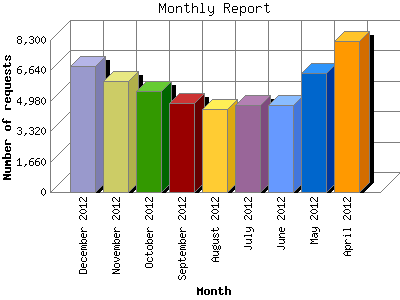

The Monthly Report identifies activity for each month in the report
time frame. Remember that each page hit can result in several server requests
as the images for each page are loaded.
Note: Depending on the
report time frame, the first and last months may not represent a complete
month's worth of data, resulting in lower hits.

| Month | Number of requests | Number of page requests | |
|---|---|---|---|
| 1. | April 2012 | 8,244 | 1,655 |
| 2. | May 2012 | 6,471 | 2,250 |
| 3. | June 2012 | 4,746 | 1,607 |
| 4. | July 2012 | 4,741 | 1,956 |
| 5. | August 2012 | 4,541 | 2,307 |
| 6. | September 2012 | 4,857 | 2,591 |
| 7. | October 2012 | 5,503 | 2,564 |
| 8. | November 2012 | 6,058 | 2,439 |
| 9. | December 2012 | 6,897 | 2,155 |
Most active month September 2012 : 2,591 pages sent. 8,244 requests handled.
Monthly average: 2,169 pages sent. 5,784 requests handled.
This report was generated on December 21, 2012 03:11.
Report time frame April 12, 2012 00:01 to December 20, 2012 23:52.
| Web statistics report produced by: analog 5.1 / Report Magic 2.21 |